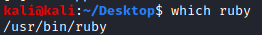
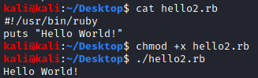
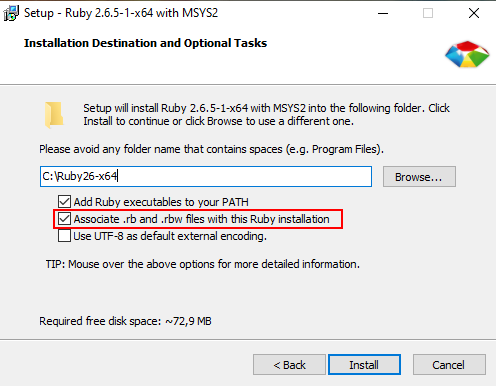

Ruby script files
LinuxTo create Ruby script files in Linux is suggested to use the
bash execution shortcut (called shebang)1. path of your Ruby interpreter
2. Add the path of the Ruby interpreter in your system to the Ruby script.
The script must begin with the shebang:
#!/usr/bin/rubyexample:  WindowsAssociate the Ruby files during the installation with the Ruby installer
